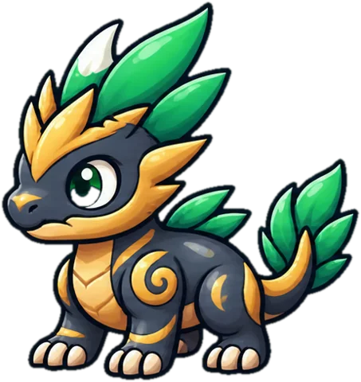

 WindDragon
WindDragonTap a stage to read its story.
Verdling is a compact little dragonoid covered in dark green scales with golden highlights and a circular golden emblem on its chest like a shield-crest. Its snout is blunt and wide, its eyes bold and alert, and four sturdy legs carry it in a quick waddling trot. Small spines run along its back. Despite living in the Lava Crater's outer edges it is drawn to wind - it scrambles to the highest nearby rock and opens its mouth into the gusts, apparently feeding on hot volcanic updrafts that carry trace mineral dust.
Field note: Verdling's chest crest heats up noticeably in strong volcanic winds - rangers use this to find hidden vents.
Lava Crater. Verdling and its family are found in the Lava Crater. See everyone who lives there.
Share a Bond Food that matches its types to become friends. Verdling loves:
A Bond Food is not a trick. It joins your spirit with the Kimuro's spirit, and only when it chooses you.
Print the Kimuro adventure packs: mazes, cards, a board game and Bond Mark medals.
See the printable packs